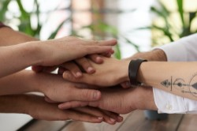

Our attitude, our choices, what we allow to affect us, we make a choice.

Build Daily Habits
Read a little everyday. Pick a time, a short book, a loved one, a pet, and read.
A chapter a day adds up.
Learn how to make healthy food - nutrient dense food that is going to
fuel your body. Try out different seasonings and figure out which combinations work well together.
Take initiative. If there's a project needing to be done. Go do it. Don't wait for 'xyz.'
Take time to learn something new. There are tons of online, community, and other resources that are low
cost or free. Teach yourself something - a new language, craft project, professional skill, and up your game.
Practice meditation or breath/posture awareness. Spend 5 - 10 minutes sitting still and let your mind clear like rain.
Take time for your physical health. Exercise at least 30 minutes everyday at least 5 days a week.
Try a short yoga video online, walk around your block, maybe buy a bicycle for your place.
Do something meaningful for someone around you. Give a family member a ride. Help them organize their kitchen.
Turn off your devices and pay attention. There's lots going on around us. Let's be aware and present.